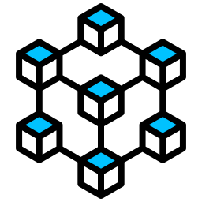

Welcome to Decent-DP Documentation

Decent-DP stands for decentralized data parallelism. It is a cutting-edge PyTorch extension designed to simplify and accelerate decentralized data parallel training.
As the official implementation of the paper [ICLR'25] From Promise to Practice: Realizing High-performance Decentralized Training, Decent-DP empowers you to scale multi-worker training efficiently—eliminating centralized bottlenecks and streamlining your deep learning pipelines.
Key Features
- Decentralized Architecture: Efficiently distributes training across multiple workers without relying on a central coordinator.
- Seamless PyTorch Integration: Easily plug into your existing PyTorch codebase with minimal modifications.
- High-Performance: Optimized for speed and scalability based on state-of-the-art research.
- Flexible and Extensible: Supports various algorithmic schemas to suit different training scenarios and model architectures.
Installation
Via pip (Recommended)
Install Decent-DP directly from PyPI:
Via uv
If you're using uv as your package manager:
From Source
To install from source, clone the repository and install in editable mode:
Quickstart Example
Here is a complete example of how to use Decent-DP to train a model:
import torch
import torch.nn as nn
import torch.distributed as dist
from decent_dp.ddp import DecentralizedDataParallel as DecentDP
from decent_dp.optim import optim_fn_adamw
from decent_dp.utils import initialize_dist
# Initialize distributed environment
rank, world_size = initialize_dist()
# Create your model
model = nn.Sequential(
nn.Linear(10, 50),
nn.ReLU(),
nn.Linear(50, 1)
).cuda()
# Wrap model with DecentDP
model = DecentDP(
model,
optim_fn=optim_fn_adamw, # or your custom optimizer function
topology="complete" # or "ring", "one-peer-exp", "alternating-exp-ring"
)
# Training loop
for epoch in range(num_epochs):
model.train()
for batch_idx, (data, target) in enumerate(train_loader):
data, target = data.cuda(), target.cuda()
output = model(data)
loss = nn.functional.mse_loss(output, target)
# Zero gradients, backward pass
model.zero_grad()
loss.backward()
# Note: optimizer.step() is automatically called by DecentDP
# Evaluation
model.eval()
with torch.no_grad():
for data, target in val_loader:
data, target = data.cuda(), target.cuda()
output = model(data)
val_loss = nn.functional.mse_loss(output, target)
Launch the script on multiple processes/nodes using torchrun:
Documentation Structure
To help you get the most out of Decent-DP, we've organized our documentation into the following sections:
- Getting Started - Installation and basic usage
- Tutorials:
- Decentralized Data Parallel - Detailed guide on using the core DDP implementation
- Topology Design - Understanding different communication topologies
- Custom Optimizers - Creating optimizer functions compatible with Decent-DP
- Benchmarks - Performance comparisons and hardware requirements
- API Reference - Detailed API documentation for all modules
Citation
If you find this repository helpful, please consider citing the following paper:
@inproceedings{wang2025promise,
title={From Promise to Practice: Realizing High-performance Decentralized Training},
author={Zesen Wang, Jiaojiao Zhang, Xuyang Wu, and Mikael Johansson},
booktitle={International Conference on Learning Representations},
year={2025},
url={https://openreview.net/forum?id=lo3nlFHOft},
}